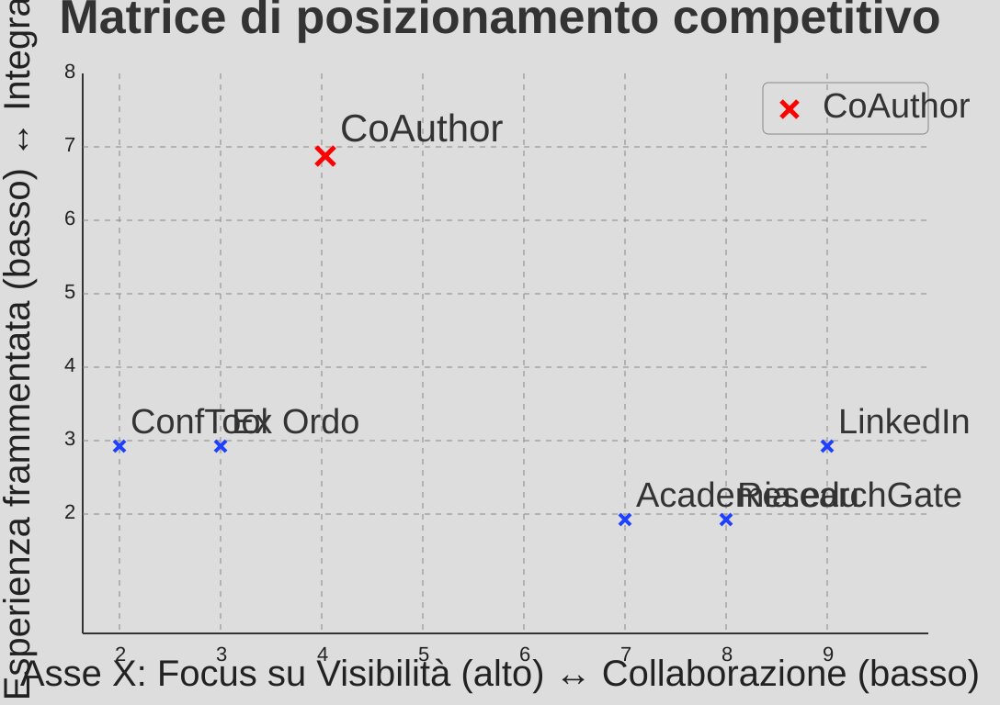

Visibilità ≠ collaborazione
Le piattaforme esistenti privilegiano branding personale e condivisione passiva, senza workflow reali di co-progettazione scientifica.
CoAuthor
Where Research Meets Collaboration
Piattaforma web + mobile per la ricerca
Trasformiamo affinità tematiche in collaborazioni concrete tra ricercatori, dottorandi, post-doc e istituzioni attraverso matching intelligente, networking attivo e strumenti operativi per eventi scientifici.
Suggerimento del giorno
AI Ethics • Explainable ML • Public Policy
Dr. Elena Rossi
Politecnico di Milano
Dr. Amir Khan
University of Copenhagen
Le piattaforme esistenti privilegiano branding personale e condivisione passiva, senza workflow reali di co-progettazione scientifica.
Le connessioni avvengono per keyword rigide, mailing list o incontri casuali, con elevato costo di tempo per trovare il partner giusto.
Call for papers, bandi e conferenze sono distribuiti su canali separati, rendendo difficile costruire continuità e follow-up.
CoAuthor unisce in un unico ecosistema: matching intelligente tra ricercatori, chat post-match, feed personalizzato di opportunità accademiche e strumenti per la gestione di eventi scientifici.
Simula l’esperienza “swipe” per approvare o saltare un potenziale co-autore. Quando trovi un match reciproco, si attiva la chat.
Profilo ricercatore + matching semantico + chat riservata.
Feed personalizzato su conferenze, call for papers e bandi.
Strumenti evento: application/review, iscrizioni, programma e networking.
Integrazione ORCID, Scopus, Google Scholar e repository open access.
CoAuthor presidia il quadrante ad alta collaborazione attiva e alta integrazione, superando l’attuale frammentazione tra social accademici e software evento.

Scrivi a partnership@coauthor.app per partnership tecnologiche, produttive e commerciali.